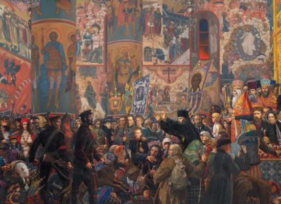
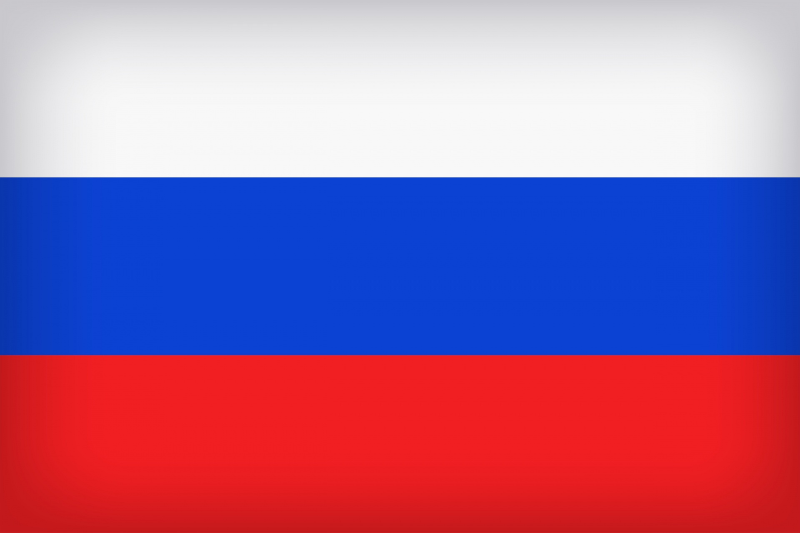
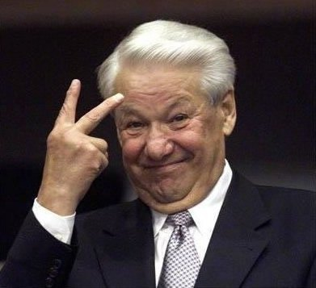
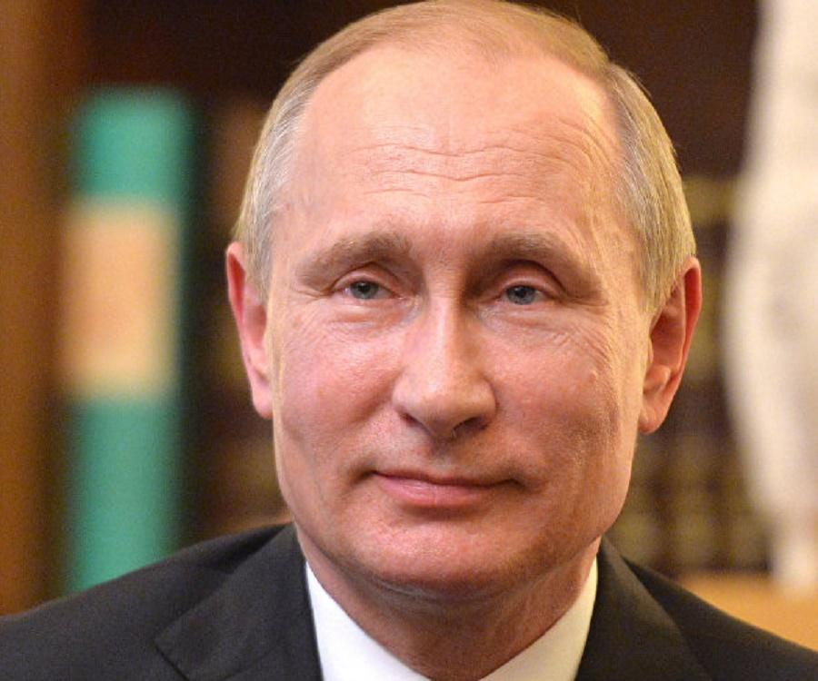
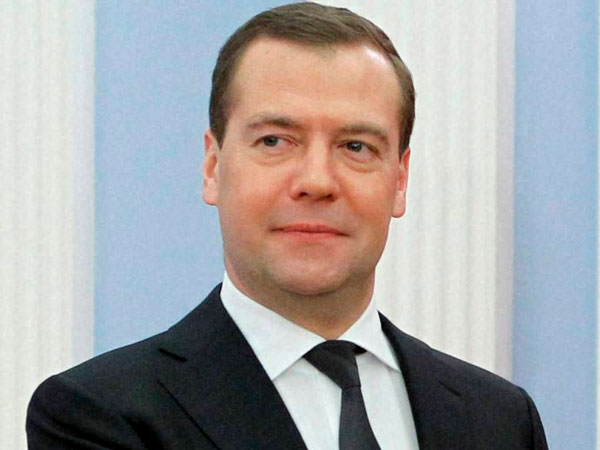

Home
Hotel and Restaurant
Travel
Activity
Other
Home
Hotel and Restaurant
Travel
Activity
Other
History of Russia

The history of Russia begins with the histories of the East Slavs. The traditional start-date of specifically Russian history is the establishment of the Rus' state in the north in 862 ruled by Vikings. Staraya Ladoga and Novgorod became the first major cities of the new union of immigrants from Scandinavia with the Slavs and Finno-Ugrians. In 882 Prince Oleg of Novgorod seized Kiev, thereby uniting the northern and southern lands of the Eastern Slavs under one authority. The state adopted Christianity from the Byzantine Empire in 988, beginning the synthesis of Byzantine and Slavic cultures that defined Orthodox Slavic culture for the next millennium. Kievan Rus' ultimately disintegrated as a state due to the Mongol invasions in 1237–1240 along with the resulting deaths of significant number of population.
Here are some major historical events...
| Date |
Event |
| c. 860 |
First Slav attack on Constantinople Cyrillic alphabet devised |
| 862 - 879 |
Ryurik (Rurik) as a ruler of Novgorod |
| 879 - 913 |
Oleg first ruler at Kiev |
| 882 |
Novgorod and Kiev united |
Facts about Russia

- It is the largest country in the world in terms of area with a total area of 17,075,400 square kilometers (6,592,800 sq mi).
- Russia is also the 9th most populated country in the world.
- In terms of land area, Russia is the largest country in the world.
- Russia is located across 9 time zones.
- The official language is Russian but there are 27 other languages co-official in various regions throughout the country.
- Russian Culture Facts for Heritage and Traditions People. Those who live in Russia are called "Russians," but about 160 various ethnic groups can be found in Russia. Cities. Each city in Russia is unique and exhibits its own culture. ... Food and Drink. ... Family Life. ... Traditions. ... Holidays. ... Language. ... Literature. ... Arts and Crafts. ... Russian History. ...
- Russians are warm, friendly, and extremely funny – just not in public. It is a norm in Russia to have one’s “serious face” on while in public places, and being too loud or showing too much emotion is considered strange and perhaps even impolite.
- Moscow is the capital of Russian Federation. The city area is about 30 km in diameter and the population reaches to almost 10 million people. Nowadays Moscow is the most important political and financial center of Russia and is home to the government and the parlament.
Russian Rulers
Boris Yeltsin

Vladimir Putin

Dmitry Medvedev

Back to Top